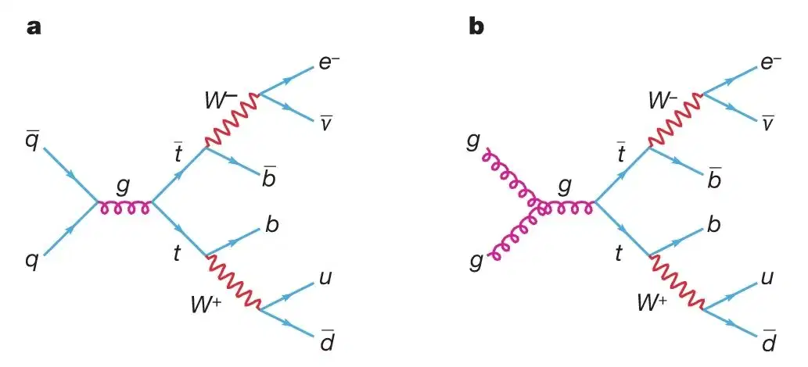
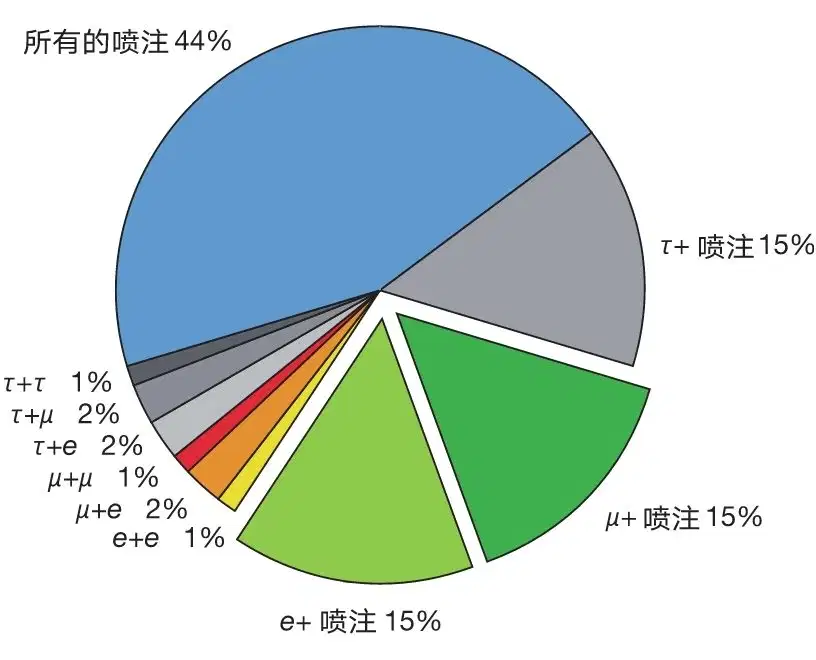
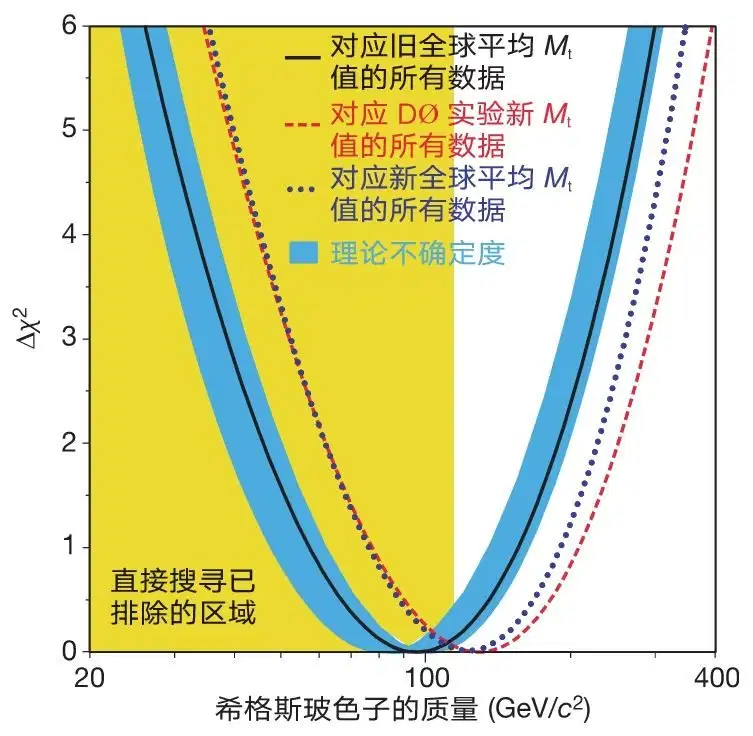
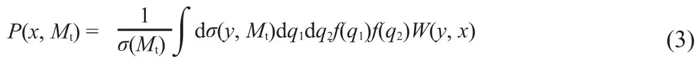
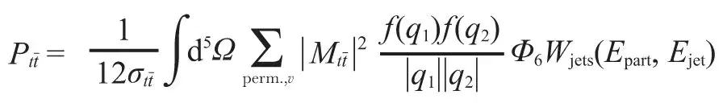
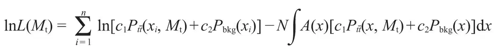
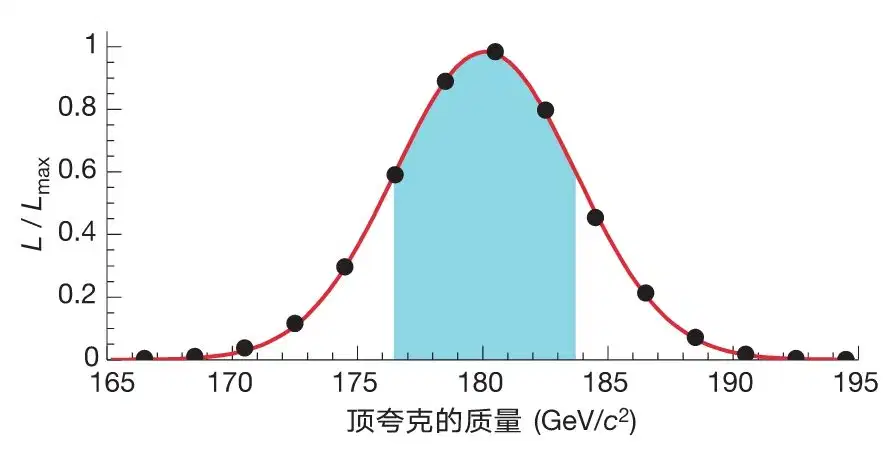

英文
英文DØ项目合作组*
编者按
尽管粒子物理的标准模型是非常成功的，但模型本身解释不了亚原子粒子的质量问题，亚原子粒子的质量被假定来源于粒子与所谓的希格斯玻色子之间的相互作用。本文中，一个名为D0合作组的国际团队通过伊利诺伊州费米实验室的万亿电子伏特加速器（Tevatron）得到了顶夸克质量的精确测定，由此有助于限定希格斯玻色子允许质量的范围。结果表明，希格斯玻色子的质量比之前预期的要大，因而需要更大的能量才能产生希格斯玻色子。2012年，位于瑞士日内瓦的欧洲核子研究组织（CERN）的大型强子对撞机终于观测到希格斯玻色子，但其质量比预期的要轻。 英文
粒子物理标准模型包含了像粒子质量这一类的参数，这类参数起源不清，无法预言，但是其量值可以通过它们之间的相互作用来限定。特别是一直被预言存在但是从未被观测到的希格斯玻色子的质量，可以由顶夸克的质量（Mt）和W玻色子的质量（MW）[1]进行限定。因而，Mt的精确测量可以更好地指导我们寻找希格斯子，甚至可验证标准模型预言的希格斯子是否与实验数据相符。由于顶夸克成对产生，并在10－24秒后就衰变为各种末态，通过衰变的产物来重建其质量是非常困难的。本文提出的技术可以从每一个顶夸克对事例中获取更多信息并得到比之前测量值[2]更高的精度（±5.3 GeV / c2）。我们最新的结果结合之前发表的互补衰变模式（全轻衰变模式）的测量值[3]和目前其余已知的结果[2]，得到的新的全球Mt平均值是178.0±4.3 GeV / c2 [4]。由此，最有可能的希格斯子质量的值从已经被实验[5,6]排除的96 GeV / c2提高到117 GeV / c2，这比当前的实验灵敏度要高。在95%置信度水平，希格斯子的质量上限从219 GeV / c2提高到251 GeV / c2。 英文
1995年顶夸克的发现是对标准模型（SM）的重要支持之一[7,8]。在众多参数中，顶夸克的质量尤其反映了标准模型的一些根本特征。这是因为本质上顶夸克是一个无质量的点粒子，然而通过与预言的希格斯场的相互作用，顶夸克获得的物理质量大致相当于一个金原子核质量。这个质量如此之大，使得顶夸克（和W玻色子一起）成为一个超常灵敏的研究希格斯场的手段。MW的测量值仅有0.05%的不确定度，而Mt的测量值有3%的不确定度[1]。要进一步缩小希格斯子质量的可能范围，需要改进这两个量值的精确度。但因为Mt的测量值不确定度大，所以对其精度的改进就格外地重要。正如最近[9,10]已指出的，标准模型的一个潜在问题在于，根据当前公认的Mt测量值，最有可能的希格斯子质量[6]落在已被实验排除的区间[5]。准确地认识希格斯子的质量，对于我们理解标准模型或者标准模型以外的其他可能的新物理理论，都是非常重要的。比如说，在一大类超对称模型中（解决标准模型缺陷的首选理论），希格斯子质量必须小于约135 GeV / c2。和标准模型不同的是，超对称性预言的希格斯子不止一个，但是其中最轻的那一个的性质基本上与标准模型中的希格斯玻色子相同。因此，如果类标准模型希格斯玻色子的质量超过135 GeV / c2，这一大类超对称模型就不再被看好。另外，从大型正负电子对撞机（LEP）[11]得到的一些超对称粒子当前的限制对Mt非常敏感。实际上，当Mt大于179 GeV / c2时，一个联系类标准模型希格斯玻色子及其更重的伴子的主要的超对称参数（tanβ）的限制将完全消失[12]。除了对希格斯玻色子的寻找有影响，改进Mt的测量精度还有其他重要意义，这个目标也是本文的主要研究问题。 英文
DØ项目在费米实验室的万亿电子伏特加速器（Tevatron）上研究了用质子–反质子（ ）对撞产生的顶夸克–反顶夸克（
）对撞产生的顶夸克–反顶夸克（ ）事例[13]。900 GeV的质子（p）和900 GeV的反质子（
）事例[13]。900 GeV的质子（p）和900 GeV的反质子（ ）对撞释放了1.8 TeV的总能量，几乎相当于十个金原子核的静止质量。每个顶（反顶）夸克几乎立即衰变为一个底（反底）夸克
）对撞释放了1.8 TeV的总能量，几乎相当于十个金原子核的静止质量。每个顶（反顶）夸克几乎立即衰变为一个底（反底）夸克 和一个W+(W－)玻色子。我们重新检查了那些一个W玻色子衰变为一个带电轻子（电子或者µ子）和一个中微子，而另一个W玻色子衰变为一个夸克和一个反夸克的事例（图1）。挑选这些事例所用选择条件及实验数据样本与我们之前发表的获取顶夸克质量的工作中所用的选择条件和数据样本相同，即对应每pb有125个事例积分亮度的实验数据。（就是说，与DØ实验中测得的结果[14]一致，假定对撞中的在能量为1.8 TeV时产生截面为5.7皮靶，这些数据大概对应于700个对，其中只有部分通过各种可能的衰变模式检测到了。大概有30% 衰变模式对应于图2归类的轻子+喷注拓扑，其中“喷注”这个词表示夸克分裂产生的成群粒子沿夸克原来的方向平行前进）。主要的背景过程包括多喷注产生（20%，其中的一个喷注被错误地重建为轻子）和与信号有相同拓扑结构的轻子型W衰变的W+喷注产生（80%）。 英文
和一个W+(W－)玻色子。我们重新检查了那些一个W玻色子衰变为一个带电轻子（电子或者µ子）和一个中微子，而另一个W玻色子衰变为一个夸克和一个反夸克的事例（图1）。挑选这些事例所用选择条件及实验数据样本与我们之前发表的获取顶夸克质量的工作中所用的选择条件和数据样本相同，即对应每pb有125个事例积分亮度的实验数据。（就是说，与DØ实验中测得的结果[14]一致，假定对撞中的在能量为1.8 TeV时产生截面为5.7皮靶，这些数据大概对应于700个对，其中只有部分通过各种可能的衰变模式检测到了。大概有30% 衰变模式对应于图2归类的轻子+喷注拓扑，其中“喷注”这个词表示夸克分裂产生的成群粒子沿夸克原来的方向平行前进）。主要的背景过程包括多喷注产生（20%，其中的一个喷注被错误地重建为轻子）和与信号有相同拓扑结构的轻子型W衰变的W+喷注产生（80%）。 英文

图1．（正反质子）对撞中（正反顶夸克）产生的费曼图。产生的顶夸克随即衰变为一个电子、中微子和数个夸克。（a）图所示的夸克–反夸克产生过程是主要的，（b）图中的胶子聚变过程贡献大约10%的截面。这个末态 是分析中用到的通道之一。 英文
是分析中用到的通道之一。 英文

图2．各个衰变模式的比例。本分析中用到的“轻子+喷注”衰变道对应于扇面图中分割出的两片，总共占衰变的30%。 英文
以前在通过轻子+喷注衰变道测量Mt值的DØ实验中，根据91个候选事例得到的量值是Mt=173.3±5.6（统计不确定度）±5.5（系统不确定度）GeV / c2。以前的分析以及DØ探测器的相关信息可以在相关文献[13,15］中找到。 英文
测量Mt的新方法类似于之前文献（参考文献16以及其中引用的文献，参考文献17）提出的关于双轻子衰变道（其中两个W玻色子的衰变都是轻子型的）中的测量方法，该方法曾被应用于之前双轻子事例的质量分析[3]，与之前建议的在LEP上测量W玻色子质量的方法也是相似的[18-20]。轻子+喷注衰变道的分析与之前的分析关键的不同之处在于：（1）测量得比较精确的事例或者更可能对应于信号的事例这点被赋予了更大的权重，（2）对末态产物（轻子、喷注和不平衡的横向动量，最后一项表明了一个未探测到的中微子的存在）的各种组合的处理以及在事例中用顶夸克衰变产物对它们的确证（比如解决喷注是对应于t夸克衰变中的b夸克还是 夸克衰变中的
夸克衰变中的 夸克的不确定性问题）。另外，由于使用领头阶矩阵元计算事例权重，分析中只保留了恰好有4个喷注的事例，这样得到的候选样本有71个事例。虽然事例数少了，但是提取Mt的新方法在统计不确定度和系统不确定度上都有实质性的改进。 英文
夸克的不确定性问题）。另外，由于使用领头阶矩阵元计算事例权重，分析中只保留了恰好有4个喷注的事例，这样得到的候选样本有71个事例。虽然事例数少了，但是提取Mt的新方法在统计不确定度和系统不确定度上都有实质性的改进。 英文
我们计算了以Mt及事例观测量作为变量的函数，并将该函数对应为信号的微分概率。这些独立事例概率的最大乘积提供了数据样本中Mt的最佳估计值。我们从两个方面考虑了探测器和事例重建算法的不完美引起的偏差影响。几何接收率、触发效率、事例选择等被包含在一个不依赖Mt的多元接收函数中。由于事例中所有对象的角度方向和电子动量的测量精度都很高，它们的测量值被直接用来计算任何对应于事例或者背景事例的产生概率。使用已知的动量分辨率来解释测量喷注能量和µ子动量时的不确定度。 英文
和以前的分析[13]一样，γ+喷注事例中的动量守恒被用来检查喷注的能量是否与蒙特卡罗（MC）模拟结果相符合。这个校准的不确定度δE=（0.025E+0.5 GeV）。因此，我们的样本中所有喷注能量都以±δE重新标度，两次重新标度和分析后的Mt（δMt=3.3 GeV / c2）结果之差的一半被作为喷注能量测量不确定度引起的系统性不确定度。对系统不确定度有贡献的其他因素包括：信号和背景的蒙特卡罗建模（δMt=1.1 GeV / c2和δMt=1.0 GeV / c2），量能器噪声和事例堆积的影响（δMt=1.3 GeV / c2）以及其他源于Mt提取的修正（δMt=0.6 GeV / c2）。以上这些因素的贡献要小得多，有另文[21,22]具体讨论。这里需要指出，新的质量测量方法明显减小了主要由测量喷注能量导致的系统不确定度（减小了约40%，从±5.5 GeV / c2减到±3.9 GeV / c2）。关于新分析方法的细节，请参看本文后面的方法。 英文
最后的结果是Mt=180.1±3.6（统计误差）±3.9（系统误差）GeV / c2。和之前的测量结果比较，新方法在统计不确定度上的改进相当于将数据量增加至原来的2.4倍。将统计和系统不确定度求均方根，我们得到Mt=180.1±5.3 GeV / c2，这与我们之前在相同衰变道的测量结果相符（在大约1.4个标准差偏离下），与之前所有的Mt测量的联合精度相当[1]。 英文
将新的测量结果与通过第I轮DØ实验（参考文献3）中搜集到的双轻子样本得到的结果（Mt=168.4±12.3（统计误差）±3.6（系统误差）GeV / c2）相结合，得出顶夸克质量的新的DØ平均：
Mt=179.0±5.1 GeV / c2
（1）
把这一结果和CDF实验的测量结果[2]进一步结合起来，得到以我们最近的结果为主导的顶夸克质量新的“全球平均”（基于目前所有已知的测量结果）[4]：
Mt=178.0±4.3 GeV / c2
（2）
这个新的全球平均将预言的希格斯子质量的最佳拟合值从96 GeV / c2提高到117 GeV / c2（见图3），现在这个值已经落在了实验排除的区间之外，但可以在Tevatron上目前正运行的实验中以及CERN目前正在建设的大型强子对撞机（LHC）上将开展的实验中达到。（在95%置信度水平下，希格斯子质量的上限值从219 GeV / c2变为251 GeV / c2）。图3显示如果只采用最新的DØ顶夸克质量来拟合希格斯子质量，获得的最佳的结果为123 GeV / c2，在95%置信度水平下最佳上限值为277 GeV / c2。注意图3中水平坐标是对数尺度，因而希格斯玻色子质量的上下限值是不对称的。 英文

图3．当前实验得出的对希格斯玻色子质量的限定。图中显示电弱数据[6]全局拟合的χ2值随希格斯子质量的变化。实线对应于之前的全球平均Mt=174.3±5.1 GeV / c2的结果，蓝色带状区域表示理论不确定度的影响。点线表示新的全球平均Mt=178.0±4.3 GeV / c2的结果，短横线对应只采用DØ实验新平均值179.0±5.1 GeV / c2的结果。左边黄色阴影区域表示实验排除的希格斯质量范围（>114.4 GeV / c2，95%置信水平下[5]）。改进后的Mt测量值使得最有可能的希格斯子质量移至实验排除的区间之外。 英文
新方法已经被用来处理费米实验室Tevatron上新一轮CDF实验和DØ实验中所收集到的数据，以期得到更精确的Mt值，以达到相当于常规方法两倍多数据样本的精度。可以预期经过未来几年在Tevatron上的实验，顶夸克质量的精度最终能够达到2 GeV / c2。而更进一步的精度提升最终将有赖于LHC的投入使用。 英文
方法
作为Mt函数的概率密度可以表示为可计算的截面与所有来自测量分辨率的效应的卷积

其中广义传递函数W(y, x)表示从一组部分子水平的变量y中产生探测器水平变量x的归一化概率；dσ(y, Mt)是部分子水平的理论微分截面；f(q)是部分子的分布函数，表示质子（反质子）内发现处于特定相互作用中、动量为q的夸克（反夸克）的概率，σ(Mt)是产生的总截面。式（3）中的积分要对所有可能的部分子态进行求和，从而得到探测器水平的观测结果。 英文
探测器的接受特性由函数A(x)表达。这个函数将观测到的探测器水平变量x的概率Pm(x, Mt)与其产生概率P(x, Mt)联系起来：Pm(x, Mt)=A(x)P(x, Mt)。能量分辨率等效应包含在传递函数W(y, x)中。式（3）中对11个精确测量的变量（带电轻子动量的3个分量以及8个喷注角度）的积分，加上四个能量–动量守恒关系，使得要完成5次积分才能得到特定Mt质量值下任何可代表（或者背景）产生事例的概率。 英文
事例判读的概率可以表示为

其中Ω代表一组积分变量（5个），对于产生事例， 是其领头阶矩阵元[23,24]。f(q1)和f(q2)是入射夸克的CTEQ4M部分子分布函数[25]，Φ6是6体末态的相空间因子，求和运算针对喷注的全部12种排列和所有可能的中微子解进行。Wjets(Epart, Ejet)对应于一个基于蒙特卡罗模拟研究的、将部分子水平的能量Epart映射到探测器测量到的能量Ejet的函数。利用一个不依赖Mt的W+喷注产生（主要的背景来源）的矩阵元，一个类似表达式被用来计算背景判读概率Pbkg。 英文
是其领头阶矩阵元[23,24]。f(q1)和f(q2)是入射夸克的CTEQ4M部分子分布函数[25]，Φ6是6体末态的相空间因子，求和运算针对喷注的全部12种排列和所有可能的中微子解进行。Wjets(Epart, Ejet)对应于一个基于蒙特卡罗模拟研究的、将部分子水平的能量Epart映射到探测器测量到的能量Ejet的函数。利用一个不依赖Mt的W+喷注产生（主要的背景来源）的矩阵元，一个类似表达式被用来计算背景判读概率Pbkg。 英文
对HERWIG（参考文献26，我们用的是5.1版本）蒙特卡罗事例样本的研究表明，新方法能够使得到的Mt统计不确定度降低将近一半。这些研究也揭示，获取的Mt值存在一个系统漂移，这一漂移依赖于数据中的背景数目。为了尽量减小这一效应，我们根据一个事例代表背景的概率引入了一个遴选程序。应用本方法处理数据之前，根据蒙特卡罗模拟，确定了具体的Pbkg截断值。对于Mt=175 GeV / c2，71%的信号和30%的背景都得到保留。71个候选事例中，有22个通过了遴选。 英文
最终作为Mt函数的似然函数表达式如下：

积分运算是通过蒙特卡罗方法完成的。Mt的最佳值（当L等于其最大值Lmax）代表了最终的N事例样本中最有可能的顶夸克质量值，参数ci反映信号和背景的数量。蒙特卡罗模拟研究表明获取的质量值有一个向下的0.5 GeV / c2的漂移，由此我们对结果进行了修正。在合理范围内Pbkg截断值的变动对Mt没有显著的影响。 英文
图4显示了进行0.5 GeV / c2的质量偏差的修正之后，通过所有遴选标准的22个事例的L(Mt) / Lmax比值随Mt的变化。在图中每一个质量数据点，对参数ci取最大似然。图中所示数据的高斯拟合得到Mt=180.1 GeV / c2，统计不确定度δMt=3.6 GeV / c2。如上文所述，系统不确定度主要受喷注能量的测量的影响，大小为δMt=3.9 GeV / c2。系统不确定度与拟合得到的统计不确定度求均方根，得到新的Mt测量值的总不确定度为±5.3 GeV / c2。 英文

图4．用最大似然法确定顶夸克的质量。数据点表示用以获取Mt的拟合的似然值与其最大值的比，该比是Mt的函数（已进行0.5 GeV / c2的质量偏差的修正，见正文）。实线表示对数据点的高斯拟合结果。最大似然值对应质量为180.1 GeV / c2，这也是新的轻子+喷注衰变道中Mt的DØ实验测定值。带颜色的区域对应正负一个标准差区间，表示±3.6 GeV / c2的拟合统计不确度。 英文
（何钧 翻译；曹庆宏 审稿）
* 合作组的参与者及所属单位的名单请参见原文。